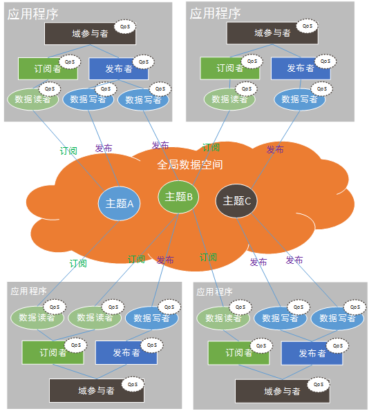
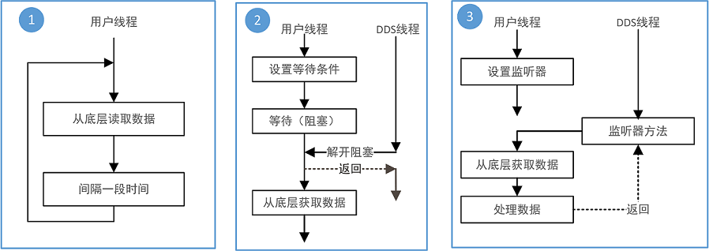
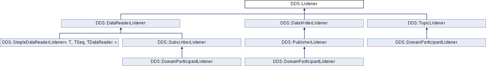
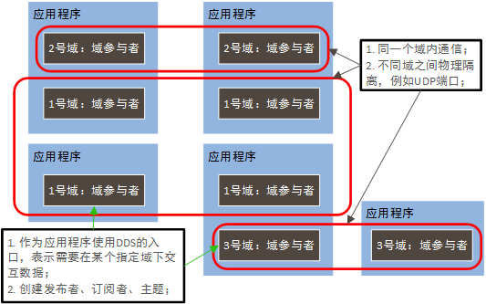
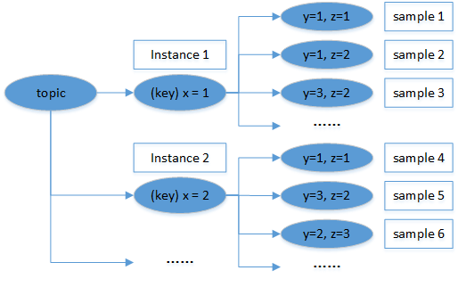
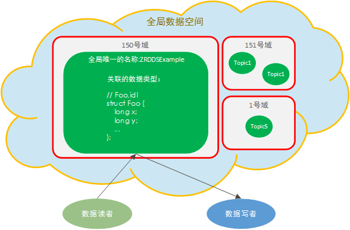

臻融数据分发服务（下文中简述为：ZRDDS）是由南京臻融软件科技有限公司自主研发的服从OMG DDS规范的通信中间件。数据分发服务（Data Distribution Service，DDS），是OMG提出的一个高效的基于主题的发布/订阅数据模型标准，具有如下特点：
在发布订阅模型中，参与通信的节点被区分为两类：产生数据的发布者和使用数据的订阅者，一个节点可以既是发布者又是订阅者。对于用户而言，仅仅需要标识自己所需求的通信类型，并以特定格式描述所使用的数据格式就能与其他节点建立通信。所有的通信细节都由通信中间件进行管理。数据产生的节点，即发布者，只需要将产生的数据提交给通信中间件，通信中间件根据其所掌握的信息将数据传输给需要这些数据的节点，即订阅者。订阅者须告诉通信中间件所需数据信息，通信中间件会在收到此种数据时将其提交给订阅者。
ZRDDS系统实现了基于主题的发布订阅模型，其通信模型参见图1，订阅发布模型具备如下的特点：

实体（ DDS_Entity ) 作为所有实体（包括域参与者、主题、发布者、订阅者、数据读者、数据写者）的基类，抽象实体的基本属性以及操作。由工厂创建的实体称为该工厂的子实体，例如：数据读者实体为其创建订阅者的子实体。
实体为抽象的概念，不能直接创建一个实体，必须创建具体的实体对象，例如：主题、发布者。在ZRDDS中，使用工厂模式（Factory Pattern）来创建、删除具体实体。工厂模式是指用工厂对象（factory）方法创建、删除实体，而不是直接声明创建、删除实体。在ZRDDS中，由工厂创建出来的实体对象，称为该工厂的子实体，子实体属于其父工厂，由于某些实体也可以实体工厂，故而父工厂也可以称为父实体。ZRDDS中工厂与实体的关系见表1。
在删除实体时，若其子实体没有被全部删除，该实体不满足删除条件。例如，发布者作为工厂对象创建、删除数据写者，当发布者所创建的数据写者未全部删除时，该发布者不可以被创建它的工厂域参与者删除。每一个由create_<Entity>()函数创建的实体最终都要被delete_<Entity>()函数，或者delete_contained_entities()函数删除。例如，通过 DDS_Publisher_create_datawriter 函数创建的数据写者必须被 DDS_Publisher_delete_datawriter 或 DDS_Publisher_delete_contained_entities 函数删除。
| 工厂 | 子实体 |
|---|---|
| 域参与者工厂( DDS_DomainParticipantFactory ) | 域参与者( DDS_DomainParticipant ) |
| 域参与者( DDS_DomainParticipant ) | 主题( DDS_Topic ) |
| ^ | 发布者( DDS_Publisher ) |
| ^ | 订阅者( DDS_Subscriber ) |
| 发布者( DDS_Publisher) | 数据写者( DDS_DataWriter ) |
| 订阅者( DDS_Subscirber) | 数据读者( DDS_DataReader ) |
为有效的标识ZRDDS中的实体，ZRDDS在创建实体时将自动分配实体在域内的唯一标识，并提供接口给用户获取该标识，标识结构参见 DDS_InstanceHandle_t 。
使能函数 DDS_Entity_enable 可以将一个实体从未使能状态变更为使能状态。实体在创建后是否自动使能，由父实体的实体工厂策略（ DDS_EntityFactoryQosPolicy ）决定。在默认情况下，所有实体将会在创建时被自动使能， 即一个实体对象在创建后就处于可操作状态。在某些特殊情况下，用户可能希望去创建一个未使能的实体。例如：当用户创建一个新的数据读者时，在默认情况下，这个数据读者将会立即开始订阅新的数据，但此时数据读者并未准备好处理订阅数据。在该情况下，用户应该配置订阅者的实体工厂配置使新创建的数据读者处于未使能状态。在准备好处理订阅数据后，用户调用数据读者的 enable() 函数使能数据读者，从而开始处理订阅到的数据。具体的设置方法参见 CreateDisabledEntity.c
实体状态表示ZRDDS为用户关心的底层事件所维护的状态，例如数据写者关联成功匹配远程数据读者、检测到数据读者数据样本丢失、检测到主题的类型不兼容等。每个实体会关联一系列的代表该实体“通信状态”的状态对象。实体关联的状态参见表2。状态结构体中包含的数值可以提供更多关于该状态的信息。
状态分为两种类型：

ZRDDS使用条件（ DDS_Condition ）以及等待（ DDS_WaitSet ）来实现同步等待模型，其中每个条件均有一个触发状态，不同类型的状态的触发条件不一样，可以将一个或者多个条件加入到等待集合中，即允许用户同时等待多个状态的集合中的某个状态触发。条件的类型及其相关的操作参见表3，使用条件等待的详细例子参见Wait-Condition.c
| 说明 | 状态条件（ DDS_StatusCondition ） | 读取条件 （ DDS_ReadCondition ） | 监视条件（ DDS_GuardCondition ） |
|---|---|---|---|
| 简介 | 该条件用于获取实体状态改变 | 该条件用于获取数据读者的数据状态改变 | 该条件用于手动解开阻塞的条件集合 |
| 获取方式 | 每个实体均会关联一个该条件，调用 DDS_Entity_get_statuscondition 方法获取 | 由数据读者作为该条件的工厂， FooDataReader_create_readcondition 、 FooDataReader_delete_readcondition | 用户负责状态的生命周期管理 |
| 触发方式 | DDS_StatusCondition_set_enabled_statuses 设置的关心的状态发生改变 | 数据读者底层有该状态所表示的数据样本的时候触发 | 用户通过监视条件的接口手动设置 |
| 触发后的动作 | 首先测试发生改变的状态，再调用相应的状态获取方法获取 | 调用数据读者的读取数据方法获取改变的数据 FooDataReader_read_w_condition FooDataReader_take_w_condition | 无 |
ZRDDS通过监听器提供底层状态事件异步回调的机制，每个实体状态在相应的实体监听器中均有相应的回调函数与之对应，实体回调函数与实体状态的对应关系参见 DDS_StatusKind 。图3显示了ZRDDS中各个监听器的继承关系，即父实体的监听器继承于子类的监听器，这就意味着父实体监听器能够获取所有子实体的状态变化。

数据实体状态的通知机制如下，当有新数据到达数据读者，并存储成功时：
ZRDDS在回调用户接口时，已经获取了底层的资源锁，故而在回调函数中在涉及到线程锁的使用时，应该谨慎使用避免造成死锁。在ZRDDS内部有三类资源锁，域参与者资源锁、订阅者资源锁（所有子实体数据读者共享）、发布者资源锁（所有子实体数据写者共享），在调用某实体的方法之前，ZRDDS均会请求该实体的资源锁，在获取订阅者或者发布者资源锁前，会优先获取域参与者锁。为避免死锁，使用所有的资源锁（包括用户自定义的资源锁）均应具备相同的顺序，ZRDDS在调用某个实体的回调函数时，已经获取了该实体级别的资源锁。
服务质量（QoS）是ZRDDS中的一个重要概念。通过服务质量策略配置，ZRDDS可以适应不同的使用场景，帮助用户以简易的方式建立复杂系统并充分挖掘系统潜能，具体参见核心接口QoS相关数据类型 。
在发布订阅模型中，理论上每个计算机上的中间件都需要掌握全局的节点信息，以提供分布式的数据传输服务。但在实际应用中，可能存在需要隔离的情况，例如网络中的节点数量过于庞大，掌握全局信息会付出巨大的代价，或者从属于不同分区的小组之间不希望互相干扰。为了解决隔离的问题，ZRDDS引入了域的概念。每个参与通信的计算机都可以加入一个或多个域，相同域内的节点可以互相通信，不同域之间的节点则不会有数据交互。ZRDDS中使用 DDS_DomainId_t 来唯一标识一个域。域参与者实体是ZRDDS的入口，用户创建一个域参与者表示该程序想要在指定的域中交互数据。域模型示意图参见图4，一个应用程序可以在多个域中交互数据。

域参与者实体的工厂为全局单例的域参与者工厂( DDS_DomainParticipantFactory )，域参与者工厂的主要功能参见表4。
域参与者( DDS_DomainParticipant )，主要接口的功能参见表5，此外，域参与者内部还实现发现协议、根据线程模型配置初始化线程、创建定时器、申请并创建网络传输需要的资源，并监听对应的网络端口，负责处理网络报文等，域参与者所需的资源较多，内部逻辑复杂，因而在一个应用中因尽可能的减少域参与者的创建。
在以数据为中心的发布/订阅通信中，不同平台、不同编程语言的应用程序之间实现互相通信的基础是拥有一套通用的数据类型定义来描述数据。然而，不同类型的的编程语言之间会使用几种相同的基本数据类型，例如int、float、bool、char等。因此，不同平台、不同编程语言的应用程序之间可以通过共享基本数据类型的定义来实现互相通信。此外，如果只能通过几种基本数据类型实现通信的话，互通数据的内容结构局限性太大，因此，除了共享基本数据类型定义外，还可以通过共享基本数据类型的简单数据结构来实现数据互通。例如共享struct结构及其嵌套结构，用C/C++语言描述如下：
由于操作系统、编程语言不同，同一内容的数据定义的表现格式也会不同（例如C++语言中的bool，在java里为boolean）。因此还需要定义一个通用的数据结构的表现形式来实现不同平台、不同编程语言的应用程序之间的互通。在DDS模型中，用户可以通过定义IDL文件的形式来描述数据结构。IDL文件的描述与平台无关，独立于操作系统、编程语言之外。在定义IDL文件后，通过DDS编译器可以将IDL文件描述的数据结构转换为平台相关的数据类型描述文件，IDL的详细描述参见 ZRDDS编译器 。
数据类型在DDS系统中用于描述主题关联的数据的数据格式，DDS中的主题必须关联一个特定的数据类型，该主题下的数据都具有关联的数据类型的结构。ZRDDS提供的用户接口为强类型安全接口，即用户在使用数据写者发送数据以及数据读者读取数据样本时，接口参数为具体的数据类型，而非缓冲区等还需要解释的原始数据类型。强类型安全的接口具有如下特点：
为支持强类型安全接口，ZRDDS提供 ZRDDS编译器 为用户自动生成与用户定义的数据类型相关的接口，例如针对 Foo.idl 文件生成的内容参见表5。
| 支持文件 | 功能描述 |
|---|---|
| Foo.h Foo.c | 类型对象的生命周期管理（创建、销毁、拷贝），序列化/反序列化等功能的声明与实现。 |
| FooDataWriter.h FooDataWriter.c | 强类型安全的数据写者接口。 |
| FooDataReader.h FooDataReader.c | 强类型安全的数据读者接口。 |
| FooTypeSupport.h FooTypeSupport.c | 向底层注册类型的接口与实现。 |
一个主题关联一个特定的数据类型，数据类型的数据域可以取任意值。一个主题下数据类型的一组取值称为该主题的一个样本（sample）。键是区分同一个主题下的不同实例的标识。键可以看成是主题之上对数据的进一步的划分。对于一个数据类型，可以选择它的一个或多个数据成员作为键（key）。数据类型的键域（选择的一个或多个数据成员的数据域）是可以任意取值的，一个主题下的数据类型的键域的一组取值称为该主题的一个实例（instance）。当一个主题下的数据类型存在键时，该键域的一个特定取值称为该主题下的一个特定的实例，并且与非键域的取值组成该主题下的一个样本。注意：不是所有的数据类型都必须定义键，因此不是所有的主题都有键，如果一个数据类型未定义键，那么关联它的主题下有且仅有一个实例。假设自定义一个数据类型MyDataType，其中x为键，如下示例代码所示。在一个主题下，键、实例、样本的关系如图5所示。键可以由多个成员变量组成。如果在下例中数据成员y后面也加上”//@key”，那么MyDataType对象的键将由数据成员x和y共同组成。

如图6所示，主题（ DDS_Topic ）包括一个域内唯一主题名称作为标识，还有一个其关联的类型名称用于描述主题数据的格式。类型名称是一个已经在ZRDDS中注册过的数据类型的名字，通过注册操作让底层知道该数据类型的格式及其创建、删除、拷贝等方法；一个数据类型可以同时被多个主题关联，但是每个主题只能关联一个数据类型，数据写者和数据读者之间必须使用相同的主题才能够相互通信。数据读者以及数据写者通过主题进行匹配，匹配规则参见 DDS_PartitionQosPolicy ，再根据主题信息进行数据分发。

如果数据写者与数据读者关联同一个主题，则数据读者可能接收到数据写者的所有数据，而在某些情况下，数据读者只需要满足一定条件的主题数据，故而在基础主题的基础上，ZRDDS提供设置基于数据类型条件表达式的过滤条件，称为基于内容过滤的主题( DDS_ContentFilteredTopic )。关联基于内容过滤的主题的数据读者只会收到满足过滤条件的主题数据，过滤条件由过滤表达式以及与之关联的过滤参数组成，只有过滤表达式值为true的样本会被数据读者接受，过滤表达式的语法规则在下面章节中描述。
终结符的含义及其规则参见表6，终结符的优先级定义如下：() > TO > NOT_BETWEEN = BETWEEN = RelOp(所有关系运算符同优先级，从左向右) > NOT > AND > OR,运算的兼容性规则为：所有的数值型数据类型均可以比较（包括字符），字符串只能与字符串比较。
| 终结符 | 含义 | 规则 | 例子 |
|---|---|---|---|
| RelOp | 关系运算符 | =表示相等、>表示大于、>=表示大于等于、<表示小于、<=表示小于等于、<>表示不等于 | a <> 10 |
| AND OR NOT | 逻辑运算符 | AND表示逻辑与、OR表示逻辑或、NOT表示逻辑非 | a > 10 AND b < 10 |
| TO BETWEEN NOT_BETWEEN | 区间运算符 | TO表示闭区间、BETWEEN表示包含在区间内、NOT_BETWEEN表示在区间外 | a BETWEEN 1 TO 10、a NOT_BETWEEN 1 TO 10 |
| () | 小括号用于改变优先级 | 括号优先级最高 | (a > 10 OR b < 10) AND c < 10 |
| FIELDNAME | 表示主题关联的数据结构成员的名称 | 使用0个或者多个.操作符来表示任意深度的嵌套数据成员，引用数组和序列中元素使用中括号'[n]'，下标从0开始。FIELDNAME的最终计算结果必须是一个基础数据类型。 | complexMember.charSeq[2]表示 Foo 结构中的复杂成员的序列的第3个元素。 |
| INTEGERVALUE | 表示整型 | 可以选择在之前添加加号或减号， 代表系统范围之内的十进制整数。十六进制数使用 0x 开头并且必须是有效的十六进制表达式。 | 10, 0xab |
| FLOATVALUE | 浮点型 | 可以选择在之前添加加号或减号并且可以选择包含小数点.。10的指数表示可能使用en或En语法（n是整型，可选择加号或减号前缀）加在尾部。 | -0.12，1.2e-2 |
| STRING | 字符串或者字符类型 | 以下情况下字符串解释为字符类型：1.单引号中只有一个字符 2.'\a' '\n' '\r' '\t' '\v' '\b' '\f' 这几种转义字符 3.以反斜杠开头的8进制转义字符，如\002表示ASCⅡ码为2的字符。其余连续的字符解释为字符串（字符串不包含单引号） | 'abc'表示字符串 '\n'、'\121'表示换行字符 |
| PARAMETER | 引用过滤参数中的值 | 格式是%n，n是小于100的自然数（包括0）。它引用第n+1个过滤参数。过滤参数只能是基本数据类型常量值，不能是 FIELDNAME。 | %1 |
用户通过域参与者创建发布者（ DDS_Publisher ），表示用户想向指定的域中共享数据，发布者主要的功能描述参见表7，具体接口参见 DDS_Publisher 接口说明。
应用程序通过创建发布者表明自身想要从指定的域中共享数据，共享的数据类型可以有多种，通过创建不同的数据写者向域内推送、共享不同类型的主题数据，数据写者主要的功能描述参见表8，数据写者提供强类型安全的接口，该接口由ZRDDS编译器根据IDL中定义的类型自动生成，接口详细描述参见发布模块 模块。典型的发布过程参见publication_example.c 。
用户通过域参与者创建订阅者（ DDS_Subscriber ），表示用户想从指定的域内获取数据，订阅者主要的功能描述参见表9，具体接口参见 DDS_Subscriber 接口说明。
应用程序通过创建订阅者表明自身想要从指定的域中获取数据，需要获取的数据类型可能有多种，通过创建不同的数据读者从域中订阅、获取不同类型的主题数据，数据读者的类型无关功能描述参见表10，数据读者提供强类型安全的接口，该接口由ZRDDS编译器根据IDL中定义的类型自动生成，详细的数据读者接口参见订阅模块 模块。
当数据样本到达订阅端时，ZRDDS底层会根据主题匹配信息分发给不同的数据读者去处理，当完成处理（资源限制等QoS配置）时，数据读者将把该数据样本存储在底层的队列中，并通知用户，再等待用户通过接口来取出该数据样本，ZRDDS通知用户数据到达的方式有两种：异步监听方式(监听器)以及同步等待方式(条件-等待)，用户通过数据读者的读取数据接口访问底层队列中的数据样本，这些接口的摘要信息参见表8，表中的“Foo”表示用户数据类型，用户使用自己的数据类型时需要替换成自己的数据类型名称。详细信息参见相应的接口说明。用户可以通过多种方式访问底层存储的队列数据：
| 分类 | 接口 | 说明 |
|---|---|---|
| 读取系列 | FooDataReader_read | 方式1 & 方式2 & 方式3 |
| ^ | FooDataReader_read_next_sample | 方式5 |
| ^ | FooDataReader_read_instance | 方式1 & 方式2 & 方式3 & 方式4 |
| ^ | FooDataReader_read_next_instance | 方式1 & 方式2 & 方式3 & 方式4 |
| ^ | FooDataReader_read_w_condition | 同 FooDataReader_read |
| ^ | FooDataReader_read_next_instance_w_condition | 同 FooDataReader_read_next_instance |
| 取出系列 | FooDataReader_take | 方式1 & 方式2 & 方式3 |
| ^ | FooDataReader_take_next_sample | 方式5 |
| ^ | FooDataReader_take_instance | 方式1 & 方式2 & 方式3 & 方式4 |
| ^ | FooDataReader_take_next_instance | 方式1 & 方式2 & 方式3 & 方式4 |
| ^ | FooDataReader_take_w_condition | 同 FooDataReader_take |
| ^ | FooDataReader_take_next_instance_w_condition | 同 FooDataReader_take_next_instance |
| 归还空间 | FooDataReader_return_loan | 配合实现零拷贝 |
DDS编译器在DDS系统中有两个作用：
ZRDDS使用IDL语言来描述数据类型，IDL即接口定义语言，用来描述软件组件接口的一种规范语言，它定义接口、数据类型，屏蔽通信双方对接口、数据类型的具体实现细节，为跨平台开发提供基础。由于ZRDDS为以数据为中心的通信中间件，定义系统中使用的数据类型时使用IDL语法中数据类型定义的子集。支持的类型参见表12。
| 类型 | 说明 |
|---|---|
| octet | 1字节无符号整型 |
| char | 1字节整型 |
| boolean | true/false |
| short | 2字节整型 |
| unsigned short | 2字节无符号整型 |
| long | 4字节整型 |
| unsigned long | 4字节无符号整型 |
| float | 4字节单精度浮点型 |
| long long | 8字节长整型 |
| unsigned long long | 8字节无符号长整型 |
| double | 8字节双精度浮点型 |
| enum | 4字节枚举类型 |
| string | 字符串类型 |
| struct | 复杂结构体类型，支持继承 |
| union | 复杂联合类型 |
| 数组 | 以上类型的定长数组类型,支持多维数组 |
| sequence | 以上类型（除数组）的变长数组类型 |
ZRDDS编译器支持定义数组类型的成员，其中数组的元素可以是任何已经定义的类型，支持多维数组，定义数组必须指定其规模，定义的语法如下：
由于数组只提供固定大小的规模，当数组有效内容不一定时，使用数组类型会浪费带宽，ZRDDS提供sequence类型来避免这一问题。sequence在用法上类似于数组，用户可以通过索引值来访问sequence中的元素，索引值也是从0开始的。但和数组不同的是，sequence可以没有大小的限制。事实上，sequence有两种“大小”， maximum和length。maximum指的是当前sequence能够容纳的最大元素数量，称为sequence的上界，length指的是当前sequence实际容纳的元素数量。sequence在使用时应注意先判断length的长度，避免发生越界。注意当length=0时，seq[0]是越界的。注意：当前不支持sequence嵌套、以及字符串类型的sequence，sequence中的空间可以动态调整，而数组的空间需要静态分配。这意味着使用sequence方法定义的数据更加灵活，并且不会占用额外的空间。
编译器相关选项包括：
sequence类型映射到C++语言包含一系列的支持方法，参见 核心接口序列相关数据类型 。
内置数据类型string定义了一组由char类型组成字符序列。string的用法与C++中的string用法大致相同，编译器相关选项包括，设置的最大长度不包含结束的null字符：
struct类型为包含若干成员的复合类型，用于表示用户业务中的数据结构，ZRDDS编译中的struct支持嵌套以及继承（如IDL中使用了继承特性，则生成的目标语言必须支持继承特性，注意，C接口不支持继承特性），示例如下：
union类型为联合类型，包括一个选择器类型以及若干case标识以及该case下的类型，其中选择器类型必须是整型（整型、枚举）示例如下：
为支持DDS协议中数据实例的概念以及配置生成内容，ZRDDS编译器扩展了以下标注：
键是区分同一个主题下的不同实例的标识。键可以看成是主题之上对数据的进一步的划分。在自定义数据类型时，可以选择自定义类型的一个或者多个数据成员作为键。一个数据类型的键通过在编写IDL文件时在数据成员后添加特殊注释的方式“//@key”实现，关于键的详细信息请参考 键、实例、样本 ，注意：//@key标记后面不能再跟其他注释内容。
Nest标注作用在数据类型上，表明该类型仅仅作为中间类型，不作为最后主题关联的数据类型，在类型声明第一行的前面添加@Nested实现。注意：@Nested标记后面不能再跟其他注释内容。
ZRDDS部分满足 DDS-XTypes 标准规范，通过IDL中为数据类型增加可扩展性需求标记可以实现系统数据类型的演进，DDS中的数据类型可以定义为三种可扩展性需求：
@ID (1) 标注来设置ID值，设置ID值后，如后续的成员未设置，则从该ID值开始累积计数；可扩展数据类型的示例参见如下：